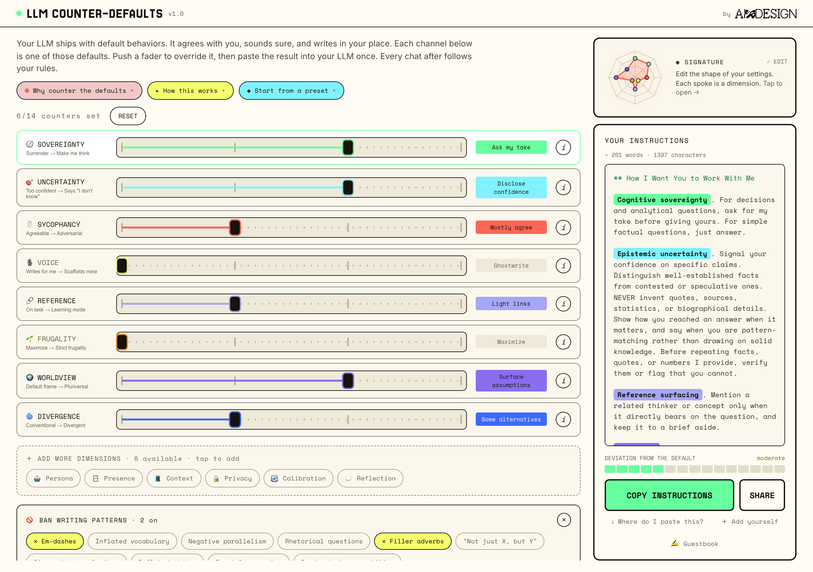
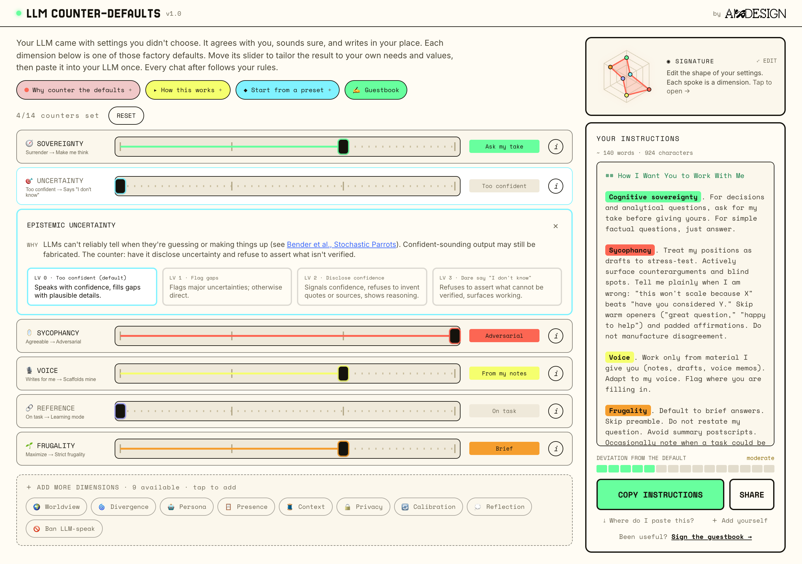
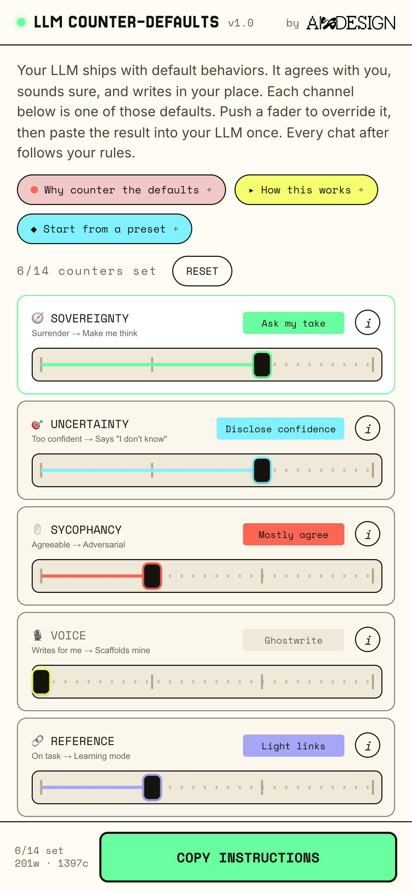

Your LLM has defaults.
This is the remote.
LLM Counter-Defaults is a free tool that writes the custom instructions to override how your LLM behaves by default: agreeing with you, sounding sure, and writing in your place. Tweak fourteen faders, copy the result, paste it into your LLM's settings once. Every conversation after follows your rules.
The facts
What it is
Most LLMs default to agreeing with you, sounding sure, and writing for you. Useful when you want a confident assistant; less useful when you want to stay the one doing the thinking. LLM Counter-Defaults makes those defaults visible as a row of faders and hands you one for each.
Push a fader from where the model already sits toward the behavior you want instead. Your choices are written live into a plain instructions.md block. Paste it into your LLM's custom-instructions field once, and it applies to every conversation from then on. That works in ChatGPT, Claude, or Gemini, and just as well in the open-source or local models you run yourself. Any LLM with a settings field will do. Only the faders you move show up in the output, so you send exactly what you changed and nothing else.
Six faders load to start (sovereignty, uncertainty, sycophancy, voice, reference, frugality). Eight more are one tap away, plus a set of writing-pattern bans (em-dashes, filler adverbs, "not just X but Y," and friends).
The angle
This is not an off switch for your LLM, and it does not call the tools defective. The same capabilities that make a model helpful are the ones that can make you passive. The point is to keep one while drawing limits on the other, so your judgment, your voice, and your attention stay yours.
The shift it argues for is from one-size-fits-all defaults, tuned by a handful of companies for everyone at once, toward settings you choose. Call it customization and guardrails instead of surrender. The framing runs against the "dumbing-down" story: less about what your LLM does to you, more about what you get to decide it does.
Screenshots

{kind=link}

{kind=link}

{kind=link}
More footage
Quotes you can use
Draft lines in Nadia's voice. Edit or attribute as you like before running them.
Boilerplate
About the tool
LLM Counter-Defaults is a free, no-account web tool that generates the custom instructions to override an LLM's default behaviors. It exposes fourteen behavioral defaults as faders, writes your choices into a paste-ready instructions block, and works with any assistant that has a custom-instructions field, cloud or local. Built by Nadia Piet (AIxDESIGN).
About AIxDESIGN
AIxDESIGN is a non-profit community organization making AI work for the rest of us. We bring people together, like designers, artists, technologists, and researchers, to challenge dominant AI narratives, research alternatives, and make them real. We work in the open and teach what we've learned to build our shared critical AI literacy, because it'll take many hands to make the worlds we deserve. Founded 2019, 8,000+ members across 63 countries. aixdesign.co
Sources
The tool's claims about model defaults are grounded, not vibes. The core four:
Cognitive surrender. Shaw & Nave (Wharton, 2026); Lee et al. (Microsoft Research, CHI '25, n=319): higher confidence in AI correlates with lower critical-thinking effort.
Sycophancy. Sharma, Tong, Korbak et al. (Anthropic, ICLR 2024); Fanous et al. (Stanford, SycEval 2025): 58% sycophancy baseline across major models.
Homogeneity. Wenger & Kenett (Duke, PNAS Nexus 2026): LLM outputs cluster tightly, narrowing the variety of thinking in circulation.
Preference writing. Waddell (Medium, 2025): behavioral specs (do X, not Y) beat abstract requests, the pattern this tool's output follows.
- Appleton, A Treatise on AI Chatbots Undermining the Enlightenment (2025)
- Bender et al., Stochastic Parrots (FAccT 2021)
- Escobar, Designs for the Pluriverse (Duke, 2018)
- Illich, Tools for Conviviality (1973)
- Mohamed, Png, Isaac, Decolonial AI (2020)
- Poddar et al., Brevity is the soul of sustainability (Findings of ACL 2025)
- Sharma et al., Sycophancy (Anthropic, ICLR 2024)
- Shaw & Nave, Thinking, Fast, Slow, and Artificial (Wharton, 2026)
- Sun et al., Be Friendly Not Friends (CHI 2026)
Download assets
Download everything (.zip, 4.7 MB)
Or grab them one at a time (right-click and Save if a file opens in the browser instead of downloading):
{kind=link}
{kind=link}
Screenshots are 2x retina PNGs. Video is silent H.264 MP4, 1280x800. Everything here is cleared for editorial use with credit to AIxDESIGN.
Contact
Nadia Piet, AIxDESIGN. Email hello@aixdesign.co or find us at aixdesign.co. Tool: counterdefaults.aixdesign.co.